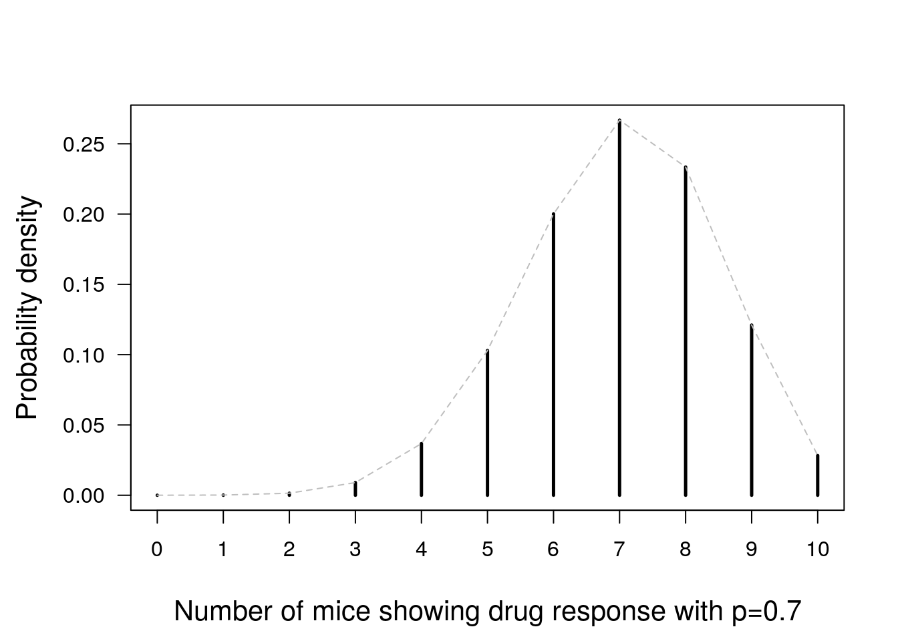

2.4 Discrete distributions
Many things in this world can be counted. For example, the number of times some insects visit a flower, the number of plant species inhabiting an ecosystem, or how often the concentration of protein in a repeated experiment exceeds a pre-determined threshold. In order to describe so-called countable events, discrete distributions entered the stage.
2.4.1 Bernouille trial
2.4.2 Binomial distribution
The next distribution we take a look at is the binomial distribution. This is a very important distribution that finds application in all sort of things, as we will see in just a bit. What it describes is the probability to observe a certain number of so-called “successes” if we repeat a trial with only two possible outcomes and fixed probability of success several times. The simplest and as I think one of the best introductory examples is the repeated tossing of a coin. The binomial distribution answers the question, how often you get one of the two sides, if you throw a coin repeatedly. To make it more tangible, imagine some numbers, something like “What is the probability, that if I throw a coin 10 times, 4 times head will be on top”. Given the probability of getting head on top each time (note that this probability does not have to be necessarily 0.5, e.g. if someone with a biased coin tries to trick you into loosing some money over a bet), the binomial distribution quantifies the probability of observing head any number of times between 0 and 10. Despite its simplicity, I think this example is a little far from the everyday questions of a biologist. So, I will show you how the binomial distribution looks like exactly and give you also a biological example.
The equation for the binomial distribution looks as follows:
\[\begin{equation} P(X=k~|~n,~p) = \binom{n}{k}p^k(1-p)^{n-k} \tag{2.1} \end{equation}\]
We will use this formula not only to understand binomial distributions, but also to gain some know-how about mathematical notations when talking about probability and statistics. In order to understand the important terms and definitions I am going to tell you, we will start with the promised example. Imagine you are conducting an experiment, where you treat 10 mice with a drug and record how many show a reaction to the drug. Here, you just distinguish between “reaction” and “no reaction”, so there are just two possible outcomes for each mouse in the experiment. Further, you observe that 7 mice show a response to the drug, while 3 do not. This is exactly the kind of data that can be described using the binomial distribution. So let us get back to the formula to connect data and distribution (this is the exciting part!).
Let us start by looking at the left side, which is \(P(X=k~|~n,~p)\). This notation is read as follows: “the probability P that X attains the value k given n and p”. \(P\) simply denotes a function. This is nothing new, since you know already the notation \(f(x)\). However, to distinguish probability functions from other functions, we use \(P(X)\) instead of \(f(x)\). Really nothing special about it. \(X\) is what is called a random variable (RV). We skip the strictly mathematical definition of an RV and just remember it as follows: “A random variable is a variable whose values are outcomes of a random process”. \(k\) is what is called a realization of \(X\). The vertical bar “|” is pronounced as “given”. Everything after that bar consists of specific model parameters with a fixed value. In the binomial distribution, these parameters are \(n\) and \(p\). Now let us pull down this mathematical mumbo jumbo from the spheres of abstractness and make it applicable to our real world problem. In our case, \(X\) is the number of responding mice and can attain any value between 0 and 10, while \(k\) is the specific realization e.g. 0, or 3, or, 7. \(n\) is the number of repeated trials, in our case just the total number of mice if we assume that the reaction of each mouse is independent from each other (just like one coin toss does not depend on the preceding or subsequent toss) and that we did not favor Stuart over Jessica (obviously we gave every single mouse a name) in terms of treatment. \(p\) is in our experiment the probability that any mouse shows a reaction to the drug. As a proxy, we can take the fraction of mice that showed a reaction within the whole sample, so 7 of 10, or 0.7, or 70%. To put it all together, our binomial distribution can be expressed as follows: “What is the probability that k mice show a response to the drug, if we investigate 10 mice and each mouse has a probability of 0.7 to show a response”.
After dissecting the left side of equation (2.1), we now turn towards the right side. This is actually the fun part where we can use reason to derive the function, because while the left side of the equation consists just of definitions and terminology, the right side captures the logic of the function. For deriving the function, let us start with the part \(p^k(1-p)^{n-k}\). In our experiment, the probability of any mouse to show a response to the drug is \(p = 0.7\). Because there are only two outcomes of any particular observation (response or no response), the probability of showing a response (\(p\)) and the probability of not showing a response must add up to 1. After all, one of these two events must happen. If we assign the variable \(q\) to the probability of showing no response, it becomes clear that \(p+q=1\), or \(q=1-p\). So the \(1-p\) within \(p^k(1-p)^{n-k}\) is just the probability of any particular mouse to not respond to the drug, and \(p\) is the probability is does. Now the exponents. We will use some exemplary numbers to make it tangible. Imagine of the 10 mice, exactly one shows a response, while the remaining 9 do not. Then \(k=1\), \(n=10\), and \(n-k=9\). So we have \(p^1(1-p)^9\). This makes totally sense, because we multiply probabilities of independent events to calculate the probability to observe a specific sequence of outcomes. What if 7 mice respond, but 3 do not? Then you see, that the probability to observe a response in the first 7 mice is \(p*p*p*p*p*p*p=p^7\), while the probability of observing no response in the remaining 3 mice is just \((1-p)*(1-p)*(1-p)=(1-p)^3\). Et voilà, combined they give \(p^7(1-p)^3\). But while, for example \(p^1(1-p)^9\) is the probability that the first mouse is responsive to our drug and the remaining 9 are not, you might ask yourself the question “But what if the first mouse does not show a response, but the second, and then the remaining 8 are non-responsive. Or what if only the 3rd mouse is responsive. Or…”. Well, if you started asking yourself that than you are halfway on discovering the meaning of the remaining part of equation (2.1), namely the \(\binom{n}{k}\). This beautiful expression is called “binomial coefficient”, and it simply spits out the number of combinations to draw \(k\) successes out of \(n\) outcomes. Please note that this has nothing to do with a fraction, as there is no division line between \(n\) and \(k\). In mathematics, whenever you talk about the binomial coefficient, you would say “\(n\) choose \(k\)” or “\(n\) over \(k\)”. As an example, consider the case where only one mouse shows a response, but none of the others do. Some pondering might already reveal to you that the responsive mouse could be the first one, or the second one, or the third one, and so on, up to the chance that it could be the last one. So you say there are 10 different combinations of any one mouse being responsive while the other 9 are not. And indeed \(\binom{10}{1}=10\). And this, ladies and gentleman, is the derivation of the binomial distribution not by some fancy schmancy mathematical theorems, but by pure thinking about the question “If I throw a coin 10 times, what is the probability that I will see head any number of times between 0 and 10?”, or in our example “If I treat 10 mice with a drug, what is the probability that I will see any number between 0 and 10 of responsive mice?”.

Let us do another example, this time with coding example